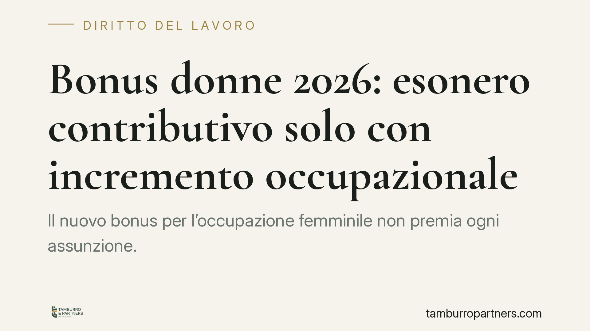

Bonus donne 2026: esonero contributivo solo con incremento occupazionale
Il nuovo bonus per l'occupazione femminile non premia ogni assunzione. L'esonero contributivo scatta solo se l'impresa registra un incremento netto dei posti di lavoro e non ha effettuato licenziamenti recenti nella stessa qualifica. Le aziende che ignorano questi parametri rischiano di vedersi negare l'agevolazione o di doverla restituire con sanzioni.

Il fatto
Dal 15 giugno 2026 entra in vigore la nuova disciplina del bonus per l'occupazione femminile. La logica è cambiata: lo sgravio sui contributi non è più legato alla singola assunzione, ma all'effetto che questa produce sull'organico complessivo dell'impresa.
In pratica, l'azienda ottiene il beneficio solo se l'assunzione della lavoratrice genera un aumento reale del numero di dipendenti. Se l'impresa assume una donna ma nei mesi precedenti ha licenziato un altro lavoratore con la stessa mansione, il vantaggio salta. È il criterio dell'incremento occupazionale netto.
Inquadramento normativo
La misura è prevista dall'art. 1 del d.l. 62/2026 e si innesta sulla cornice europea degli aiuti di Stato. Il riferimento centrale è l'art. 2 del Regolamento Ue 651/2014, che definisce sia la nozione di "lavoratore svantaggiato" sia il concetto di incremento occupazionale netto.
Il Regolamento europeo chiarisce un punto decisivo: l'assunzione agevolata deve determinare un aumento netto del numero di dipendenti rispetto alla media dei dodici mesi precedenti. In altri termini, il posto di lavoro deve essere nuovo, non sostitutivo di un posto soppresso.
L'INPS è l'ente chiamato a gestire l'esonero e a verificare il rispetto dei requisiti. Il controllo non avviene solo al momento della domanda: l'Istituto può accertare a posteriori la sussistenza delle condizioni e revocare il beneficio già fruito.
Implicazioni pratiche
Per l'imprenditore questo significa che la convenienza dell'assunzione va calcolata sull'intero organico, non sulla singola posizione. Tre profili meritano attenzione.
Primo: i licenziamenti pregressi. Se nei mesi precedenti l'azienda ha interrotto rapporti di lavoro per ragioni economiche o ha ridotto l'organico, l'incremento netto potrebbe non essere raggiunto. Il bonus, in quel caso, non spetta.
Secondo: la base di calcolo. L'incremento si misura confrontando il numero di lavoratori dopo l'assunzione con la media dei dodici mesi precedenti, espressa in unità di lavoro annuo (ULA). Non basta una fotografia istantanea: serve un confronto su base annua.
Terzo: il rischio di recupero. Se l'INPS accerta in un secondo momento che il requisito dell'incremento non era soddisfatto, l'azienda dovrà restituire i contributi non versati, con interessi e possibili sanzioni. La pianificazione preventiva diventa quindi essenziale.
La misura penalizza chi assume con l'unico obiettivo di intercettare l'agevolazione, mentre tutela le imprese che ampliano realmente la propria forza lavoro. È un cambio di prospettiva che richiede un'analisi prima della firma del contratto.
Cosa fare in concreto
- Ricostruisci l'organico degli ultimi dodici mesi. Calcola la media in ULA prima di procedere all'assunzione, così da verificare se il nuovo ingresso produce un incremento netto.
- Verifica i licenziamenti recenti. Controlla se nei mesi precedenti ci sono state cessazioni nella stessa qualifica: potrebbero azzerare il diritto al bonus.
- Documenta tutto per iscritto. Conserva organigrammi, cedolini e prospetti del personale: in caso di verifica INPS l'onere della prova ricade sull'impresa.
- Inquadra correttamente la lavoratrice. Accertati che rientri nella nozione di "lavoratrice svantaggiata" secondo il Regolamento Ue 651/2014, perché il requisito soggettivo resta condizione di accesso.
- Valuta una verifica preventiva. Prima di presentare la domanda, fai controllare la sussistenza di tutti i requisiti da un professionista, per evitare il rischio di recupero successivo.
Una nota di metodo
Le agevolazioni contributive sono strumenti utili, ma comportano obblighi di compliance precisi. Il confine tra fruizione legittima e indebito percepimento si gioca sui dettagli del calcolo e sulla coerenza con la storia occupazionale dell'azienda. Consigliamo di affrontare la valutazione prima dell'assunzione, non dopo.
---
*Contributo informativo a cura di Tamburro & Partners - Avv. Giuseppe Tamburro. Non costituisce parere legale.*
Ogni storia di lavoro ha i suoi tempi.
Se gestisci HR e vuoi un confronto su contenzioso, ispezioni o licenziamenti, scrivi allo studio. Ti rispondiamo entro un giorno lavorativo.